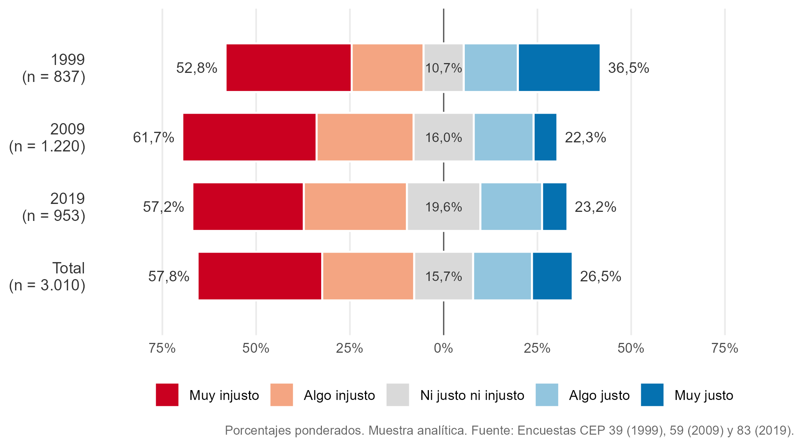
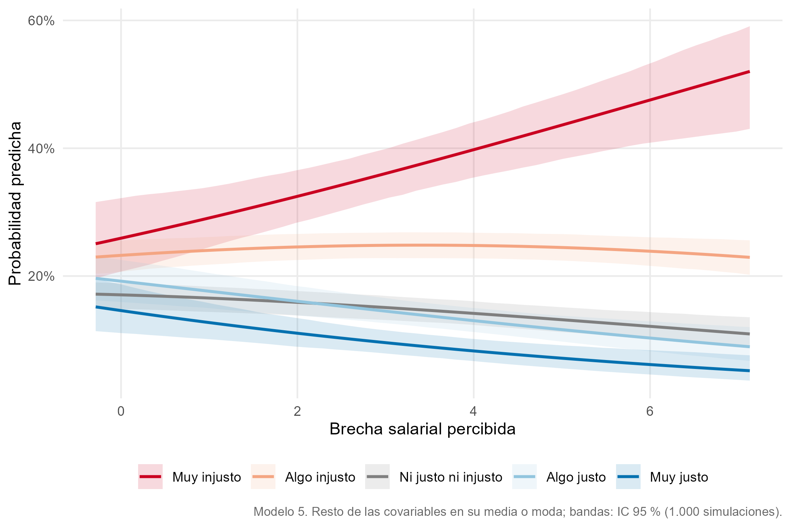
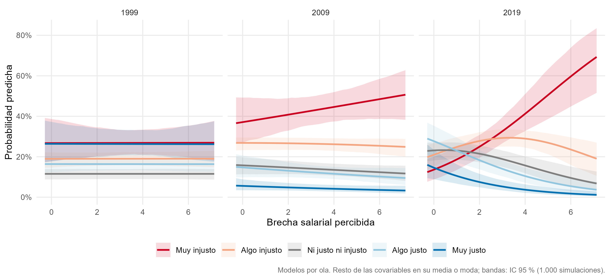

Ver código
knitr::include_graphics("output/figuras/02_justicia_likert.png")
knitr::include_graphics("output/figuras/02_justicia_likert.png")
sin_titulo(tablas$correlaciones)| Variable | Justicia de mercado en salud | Ingreso: decil 10 | Percepción de meritocracia | Brecha salarial (log) | Mujer | Edad | Educación superior | Estatus subjetivo |
|---|---|---|---|---|---|---|---|---|
| Justicia de mercado en salud | 1 | |||||||
| Ingreso: decil 10 | 0,14*** PC |
1 | ||||||
| Percepción de meritocracia | -0,00 PS |
-0,01 PS |
1 | |||||
| Brecha salarial (log) | -0,05* PS |
0,18*** PS |
-0,04* P |
1 | ||||
| Mujer | -0,05 PC |
-0,18*** PC |
-0,02 PS |
-0,08*** PS |
1 | |||
| Edad | 0,03 PS |
0,00 PS |
0,06** P |
0,03 P |
0,01 PS |
1 | ||
| Educación superior | 0,06* PC |
0,61*** PC |
0,03 PS |
0,17*** PS |
-0,03 PC |
-0,08** PS |
1 | |
| Estatus subjetivo | 0,06** PS |
0,45*** PS |
0,04* P |
0,06** P |
-0,04 PS |
-0,12*** P |
0,42*** PS |
1 |
| P = Pearson; PS = polyserial (biserial con variable binaria); PC = policórica (tetracórica con dos variables binarias). | ||||||||
| * p < 0,05; ** p < 0,01; *** p < 0,001 (prueba z con el error estándar de hetcor). | ||||||||
tabla_modelos(
modelos = c(tablas$modelos, list(m7 = todo$modelo_interacciones$m5_m7[[2]])),
nombres = todo$modelo_interacciones$nombres_coef,
nombres_modelos = c(tablas$nombres_modelos, "Modelo 7 (x año)")
)| Modelo 1 (H1) | Modelo 2 (H2) | Modelo 3 (H3) | Modelo 4 (H4) | Modelo 5 (completo) | Modelo 6 (H5) | Modelo 7 (x año) | |
|---|---|---|---|---|---|---|---|
| Ingreso: decil 10 (H1; ref. deciles 1 a 9) | 0.347 ** | 0.264 * | -0.408 | -0.095 | |||
| (0.120) | (0.132) | (0.399) | (0.267) | ||||
| Ingreso: no reporta (H1; ref. deciles 1 a 9) | -0.023 | -0.020 | 0.010 | -0.480 | |||
| (0.107) | (0.113) | (0.443) | (0.262) | ||||
| Percepción de meritocracia (H2) | 0.018 | 0.098 * | 0.078 | 0.429 *** | |||
| (0.037) | (0.040) | (0.045) | (0.073) | ||||
| Brecha salarial, log (H3) | -0.120 *** | -0.161 *** | -0.158 *** | -0.032 | |||
| (0.036) | (0.038) | (0.038) | (0.076) | ||||
| 2009 (H4; ref. 1999) | -0.460 *** | -0.612 *** | -0.616 *** | 0.609 | |||
| (0.119) | (0.124) | (0.124) | (0.476) | ||||
| 2019 (H4; ref. 1999) | -0.282 * | -0.492 *** | -0.495 *** | 2.157 *** | |||
| (0.126) | (0.146) | (0.145) | (0.510) | ||||
| Mujer (ref. hombre) | -0.103 | -0.100 | -0.103 | ||||
| (0.074) | (0.074) | (0.074) | |||||
| Edad | -0.008 | -0.008 | -0.010 | ||||
| (0.012) | (0.012) | (0.012) | |||||
| Edad al cuadrado / 100 | 0.013 | 0.013 | 0.014 | ||||
| (0.012) | (0.012) | (0.012) | |||||
| Educación superior completa | 0.147 | 0.135 | 0.132 | ||||
| (0.100) | (0.102) | (0.103) | |||||
| Estatus subjetivo | 0.020 | 0.020 | 0.023 | ||||
| (0.027) | (0.027) | (0.027) | |||||
| Centro (ref. izquierda) | 0.314 * | 0.314 * | 0.341 * | ||||
| (0.134) | (0.134) | (0.133) | |||||
| Derecha (ref. izquierda) | 0.200 | 0.189 | 0.195 | ||||
| (0.121) | (0.122) | (0.118) | |||||
| Sin posición (ref. izquierda) | 0.014 | 0.013 | -0.001 | ||||
| (0.111) | (0.112) | (0.108) | |||||
| Decil 10 x meritocracia (H5) | 0.187 | ||||||
| (0.101) | |||||||
| No reporta x meritocracia (H5) | -0.005 | ||||||
| (0.113) | |||||||
| Decil 10 x 2009 | 0.672 * | ||||||
| (0.306) | |||||||
| Decil 10 x 2019 | 0.335 | ||||||
| (0.326) | |||||||
| No reporta x 2009 | 0.773 * | ||||||
| (0.321) | |||||||
| No reporta x 2019 | 0.494 | ||||||
| (0.307) | |||||||
| Meritocracia x 2009 | -0.422 *** | ||||||
| (0.093) | |||||||
| Meritocracia x 2019 | -0.556 *** | ||||||
| (0.107) | |||||||
| Brecha salarial x 2009 | -0.036 | ||||||
| (0.095) | |||||||
| Brecha salarial x 2019 | -0.292 ** | ||||||
| (0.102) | |||||||
| Umbral 1|2 | -0.669 *** | -0.634 *** | -1.105 *** | -0.986 *** | -1.228 ** | -1.300 ** | -0.010 |
| (0.061) | (0.143) | (0.136) | (0.101) | (0.400) | (0.412) | (0.452) | |
| Umbral 2|3 | 0.345 *** | 0.377 ** | -0.089 | 0.026 | -0.197 | -0.268 | 1.043 * |
| (0.060) | (0.144) | (0.135) | (0.101) | (0.402) | (0.414) | (0.454) | |
| Umbral 3|4 | 1.051 *** | 1.082 *** | 0.619 *** | 0.735 *** | 0.521 | 0.450 | 1.776 *** |
| (0.067) | (0.148) | (0.134) | (0.105) | (0.403) | (0.415) | (0.456) | |
| Umbral 4|5 | 2.140 *** | 2.170 *** | 1.708 *** | 1.835 *** | 1.629 *** | 1.559 *** | 2.900 *** |
| (0.084) | (0.161) | (0.136) | (0.124) | (0.397) | (0.410) | (0.459) | |
| N | 3010 | 3010 | 3010 | 3010 | 3010 | 3010 | 3010 |
| Wald ingreso (p) | 0.010 | 0.102 | |||||
| Wald interacción (p) | 0.163 | ||||||
| Wald ingreso x año (H1) (p) | 0.043 | ||||||
| Wald meritocracia x año (H2) (p) | 0.000 | ||||||
| Wald brecha x año (H3) (p) | 0.004 | ||||||
| Errores estándar entre paréntesis. *** p < 0,001; ** p < 0,01; * p < 0,05. | |||||||
knitr::include_graphics("output/figuras/02_pred_brecha_total.png")
knitr::include_graphics("output/figuras/02_pred_brecha_olas.png")
tabla_modelos(todo$modelos_ingreso$quintil_f, nombres = NULL,
nombres_modelos = c("Modelo 5", "Modelo 6 (x meritocracia)", "Modelo 7 (x año)"))| Modelo 5 | Modelo 6 (x meritocracia) | Modelo 7 (x año) | |
|---|---|---|---|
| percepcion_meritocracia | 0.099 * | 0.093 | 0.428 *** |
| (0.040) | (0.089) | (0.074) | |
| brecha_salarial | -0.165 *** | -0.165 *** | -0.010 |
| (0.039) | (0.039) | (0.078) | |
| encuesta_f2009 | -0.608 *** | -0.609 *** | 0.132 |
| (0.124) | (0.125) | (0.504) | |
| encuesta_f2019 | -0.482 *** | -0.487 *** | 1.767 *** |
| (0.146) | (0.145) | (0.530) | |
| sexo_fMujer | -0.098 | -0.098 | -0.090 |
| (0.075) | (0.075) | (0.074) | |
| edad | -0.008 | -0.008 | -0.010 |
| (0.012) | (0.012) | (0.012) | |
| edad2 | 0.013 | 0.013 | 0.014 |
| (0.012) | (0.012) | (0.012) | |
| educacion | 0.130 | 0.127 | 0.118 |
| (0.098) | (0.099) | (0.099) | |
| estatus_subjetivo | 0.013 | 0.013 | 0.022 |
| (0.027) | (0.028) | (0.028) | |
| posicion_politica_fCentro | 0.328 * | 0.332 * | 0.377 ** |
| (0.133) | (0.133) | (0.133) | |
| posicion_politica_fDerecha | 0.192 | 0.193 | 0.184 |
| (0.119) | (0.119) | (0.117) | |
| posicion_politica_fSin posición | 0.027 | 0.029 | 0.017 |
| (0.109) | (0.109) | (0.107) | |
| quintil_fQuintil 2 | -0.242 | -0.141 | -0.664 * |
| (0.134) | (0.424) | (0.275) | |
| quintil_fQuintil 3 | -0.069 | -0.375 | -0.592 |
| (0.133) | (0.479) | (0.317) | |
| quintil_fQuintil 4 | 0.006 | 0.179 | -0.411 |
| (0.133) | (0.478) | (0.312) | |
| quintil_fQuintil 5 | 0.207 | 0.068 | -0.550 |
| (0.142) | (0.433) | (0.292) | |
| quintil_fNo reporta | -0.062 | 0.020 | -0.936 ** |
| (0.142) | (0.523) | (0.334) | |
| Muy injusto|Algo injusto | -1.310 ** | -1.327 ** | -0.385 |
| (0.400) | (0.484) | (0.477) | |
| Algo injusto|Ni justo ni injusto | -0.276 | -0.293 | 0.671 |
| (0.402) | (0.486) | (0.479) | |
| Ni justo ni injusto|Algo justo | 0.443 | 0.427 | 1.407 ** |
| (0.404) | (0.489) | (0.480) | |
| Algo justo|Muy justo | 1.552 *** | 1.537 ** | 2.535 *** |
| (0.399) | (0.486) | (0.483) | |
| percepcion_meritocracia:quintil_fQuintil 2 | -0.030 | ||
| (0.115) | |||
| percepcion_meritocracia:quintil_fQuintil 3 | 0.085 | ||
| (0.124) | |||
| percepcion_meritocracia:quintil_fQuintil 4 | -0.049 | ||
| (0.124) | |||
| percepcion_meritocracia:quintil_fQuintil 5 | 0.040 | ||
| (0.115) | |||
| percepcion_meritocracia:quintil_fNo reporta | -0.020 | ||
| (0.136) | |||
| encuesta_f2009:quintil_fQuintil 2 | 0.614 | ||
| (0.340) | |||
| encuesta_f2019:quintil_fQuintil 2 | 0.456 | ||
| (0.365) | |||
| encuesta_f2009:quintil_fQuintil 3 | 0.734 * | ||
| (0.362) | |||
| encuesta_f2019:quintil_fQuintil 3 | 0.587 | ||
| (0.390) | |||
| encuesta_f2009:quintil_fQuintil 4 | 0.496 | ||
| (0.353) | |||
| encuesta_f2019:quintil_fQuintil 4 | 0.505 | ||
| (0.403) | |||
| encuesta_f2009:quintil_fQuintil 5 | 1.067 ** | ||
| (0.341) | |||
| encuesta_f2019:quintil_fQuintil 5 | 0.922 * | ||
| (0.380) | |||
| encuesta_f2009:quintil_fNo reporta | 1.313 *** | ||
| (0.398) | |||
| encuesta_f2019:quintil_fNo reporta | 0.980 * | ||
| (0.397) | |||
| percepcion_meritocracia:encuesta_f2009 | -0.417 *** | ||
| (0.093) | |||
| percepcion_meritocracia:encuesta_f2019 | -0.553 *** | ||
| (0.106) | |||
| brecha_salarial:encuesta_f2009 | -0.060 | ||
| (0.096) | |||
| brecha_salarial:encuesta_f2019 | -0.322 ** | ||
| (0.103) | |||
| N | 3010 | 3010 | 3010 |
| Errores estándar entre paréntesis. *** p < 0,001; ** p < 0,01; * p < 0,05. | |||
tabla_modelos(todo$modelos_ingreso$quintil_cat, nombres = NULL,
nombres_modelos = c("Modelo 5", "Modelo 6 (x meritocracia)", "Modelo 7 (x año)"))| Modelo 5 | Modelo 6 (x meritocracia) | Modelo 7 (x año) | |
|---|---|---|---|
| percepcion_meritocracia | 0.101 * | 0.097 * | 0.430 *** |
| (0.040) | (0.048) | (0.073) | |
| brecha_salarial | -0.163 *** | -0.163 *** | -0.027 |
| (0.038) | (0.038) | (0.076) | |
| encuesta_f2009 | -0.606 *** | -0.608 *** | 0.532 |
| (0.124) | (0.124) | (0.474) | |
| encuesta_f2019 | -0.481 *** | -0.482 *** | 2.121 *** |
| (0.146) | (0.146) | (0.513) | |
| sexo_fMujer | -0.103 | -0.102 | -0.097 |
| (0.075) | (0.075) | (0.075) | |
| edad | -0.008 | -0.008 | -0.010 |
| (0.012) | (0.012) | (0.012) | |
| edad2 | 0.013 | 0.013 | 0.014 |
| (0.012) | (0.012) | (0.012) | |
| educacion | 0.136 | 0.134 | 0.122 |
| (0.098) | (0.099) | (0.099) | |
| estatus_subjetivo | 0.016 | 0.016 | 0.021 |
| (0.027) | (0.027) | (0.027) | |
| posicion_politica_fCentro | 0.318 * | 0.320 * | 0.363 ** |
| (0.134) | (0.135) | (0.134) | |
| posicion_politica_fDerecha | 0.192 | 0.191 | 0.188 |
| (0.120) | (0.121) | (0.117) | |
| posicion_politica_fSin posición | 0.019 | 0.020 | 0.014 |
| (0.112) | (0.112) | (0.108) | |
| quintil_catQuintil 5 | 0.274 * | 0.154 | -0.106 |
| (0.111) | (0.322) | (0.203) | |
| quintil_catNo reporta | 0.009 | 0.110 | -0.497 |
| (0.115) | (0.449) | (0.267) | |
| Muy injusto|Algo injusto | -1.207 ** | -1.218 ** | -0.004 |
| (0.401) | (0.418) | (0.452) | |
| Algo injusto|Ni justo ni injusto | -0.175 | -0.187 | 1.049 * |
| (0.403) | (0.420) | (0.454) | |
| Ni justo ni injusto|Algo justo | 0.543 | 0.532 | 1.783 *** |
| (0.404) | (0.422) | (0.457) | |
| Algo justo|Muy justo | 1.651 *** | 1.640 *** | 2.908 *** |
| (0.398) | (0.416) | (0.459) | |
| percepcion_meritocracia:quintil_catQuintil 5 | 0.035 | ||
| (0.084) | |||
| percepcion_meritocracia:quintil_catNo reporta | -0.025 | ||
| (0.114) | |||
| encuesta_f2009:quintil_catQuintil 5 | 0.572 * | ||
| (0.244) | |||
| encuesta_f2019:quintil_catQuintil 5 | 0.499 | ||
| (0.282) | |||
| encuesta_f2009:quintil_catNo reporta | 0.827 * | ||
| (0.325) | |||
| encuesta_f2019:quintil_catNo reporta | 0.565 | ||
| (0.312) | |||
| percepcion_meritocracia:encuesta_f2009 | -0.415 *** | ||
| (0.092) | |||
| percepcion_meritocracia:encuesta_f2019 | -0.554 *** | ||
| (0.106) | |||
| brecha_salarial:encuesta_f2009 | -0.038 | ||
| (0.095) | |||
| brecha_salarial:encuesta_f2019 | -0.306 ** | ||
| (0.101) | |||
| N | 3010 | 3010 | 3010 |
| Errores estándar entre paréntesis. *** p < 0,001; ** p < 0,01; * p < 0,05. | |||